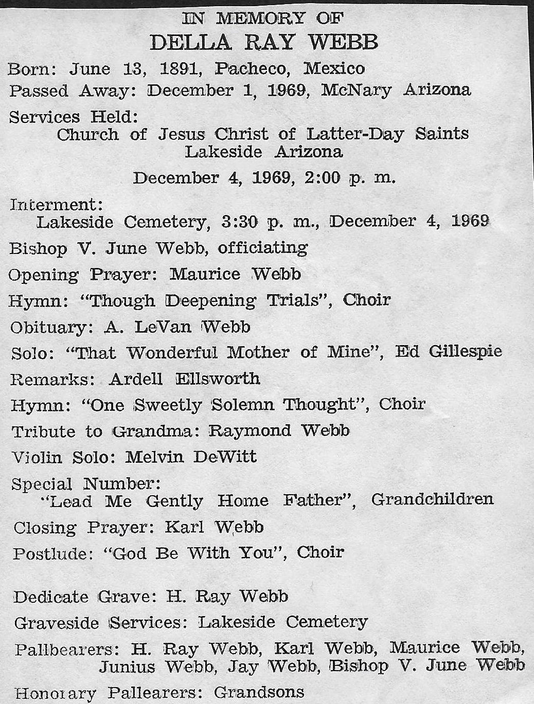

IN MEMORY OF
DELLA RAY WEBB
Born: June 13, 1891, Pacheco, Mexico
Passed Away: December 1, 1969, McNary Arizona
Services Held:
Church of Jesus Christ of Latter-Day Saints
Lakeside Arizona
December 4, 1969, 2:00 p. m.
Interment:
Lakeside Cemetery, 3:30 p. m., December 4, 1969
Bishop V. June Webb, officiating
Opening Prayer: Maurice Webb
Hymn: “Though Deepening Trials”, Choir
Obituary: A. LeVan Webb
Solo: “That Wonderful Mother of Mine”, Ed Gillespie
Remarks: Ardell Ellsworth
Hymn: “One Sweetly Solemn Thought”, Choir
Tribute to Grandma: Raymond Webb
Violin Solo: Melvin DeWitt
Special Number:
“Lead Me Gently Home Father”, Grandchildren
Closing Prayer: Karl Webb
Postlude: “God Be With You”, Choir
Dedicate Grave: H. Ray Webb
Graveside Services: Lakeside Cemetery
Pallbearers: H. Ray Webb, Karl Webb, Maurice Webb,
Junius Webb, Jay Webb, Bishop V. June Webb
Honorary Pallbearers: Grandsons